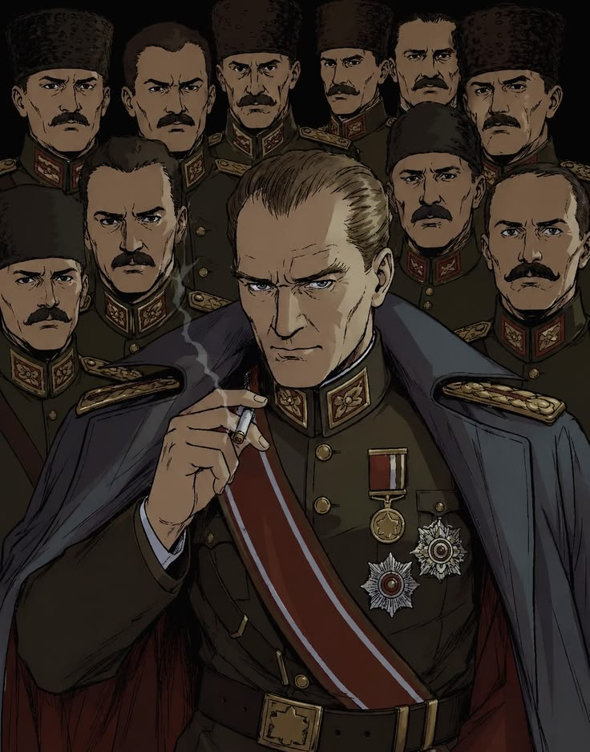
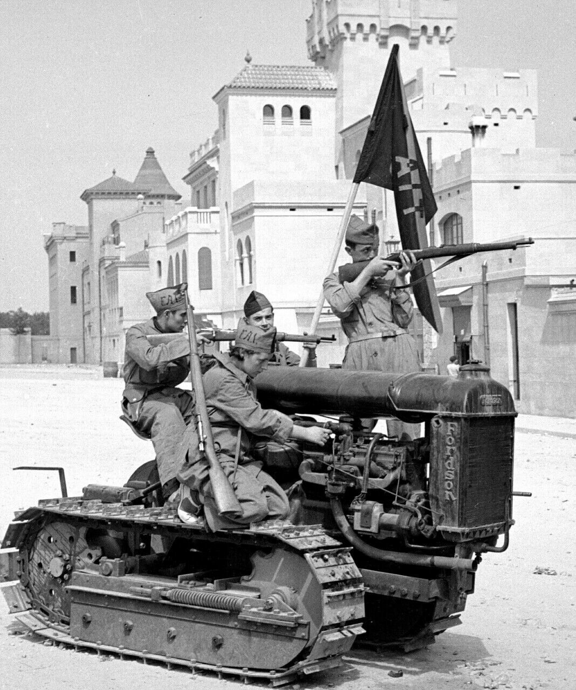
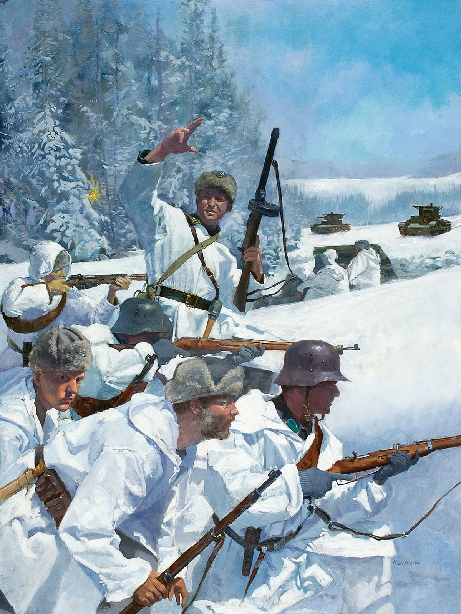
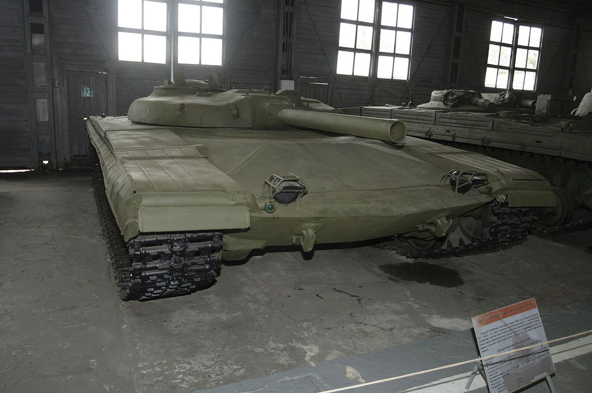
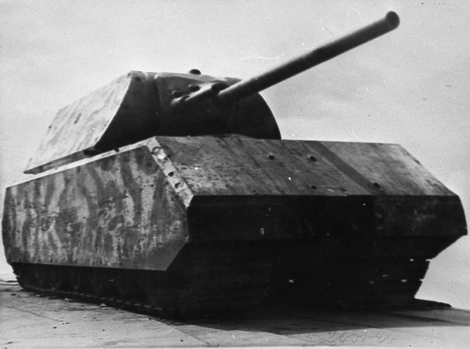
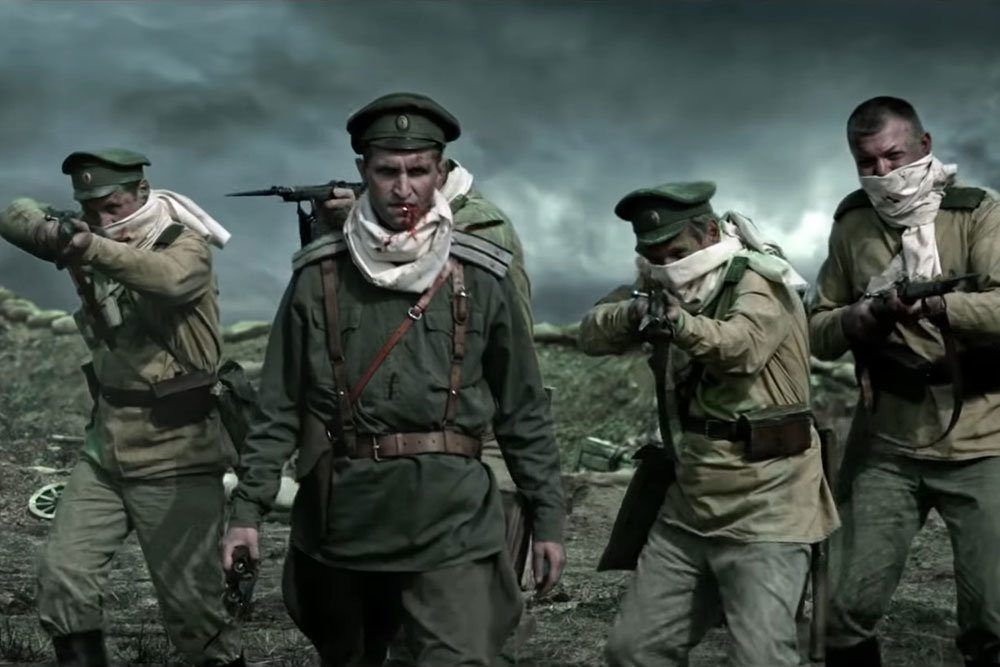
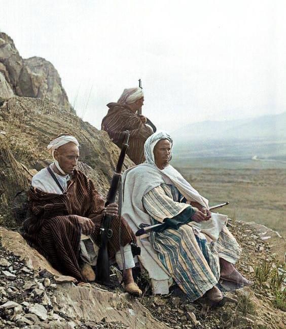
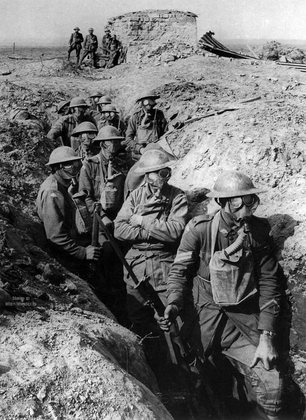
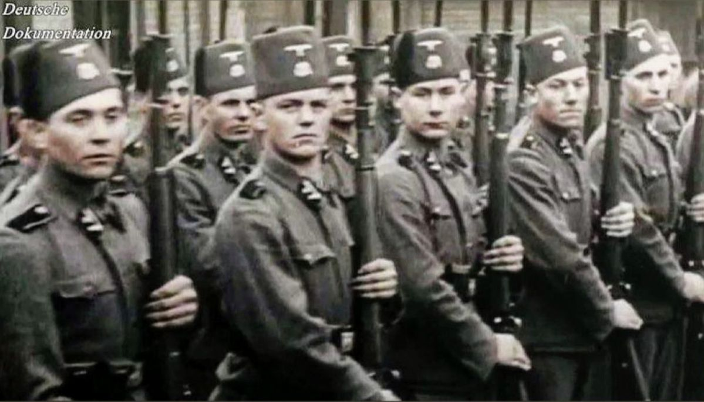
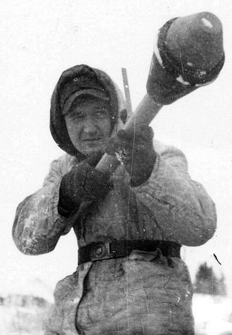

Perang Dunia II: Pertempuran yang Mengubah Dunia
Mengenal kronologi, strategi, dan dampak Perang Dunia II yang menjadi konflik terbesar dalam sejarah manusia.
Baca Selengkapnya →
Strategi Perang Sun Tzu yang Masih Relevan
Pelajaran dari kitab The Art of War karya Sun Tzu yang hingga kini dipakai oleh militer dan pemimpin dunia.
Baca Selengkapnya →
Kejatuhan Kekaisaran Ottoman
Bagaimana kekaisaran yang pernah menguasai tiga benua akhirnya runtuh dan melahirkan Turki modern.
Baca Selengkapnya →Teknologi Senjata Modern yang Mengubah Peperangan
Dari drone tempur hingga rudal hipersonik, teknologi militer modern yang mendefinisikan ulang strategi perang.
Baca Selengkapnya →
Perang Dingin: Dua Kekuatan yang Mengancam Dunia
Rivalitas Amerika Serikat dan Uni Soviet yang berlangsung puluhan tahun dan membentuk peta dunia modern.
Baca Selengkapnya →
Perang Saudara Spanyol
Konflik brutal 1936–1939 yang membelah Spanyol menjadi dua kubu dan menjadi pemanasan Perang Dunia II.
Baca Selengkapnya →
Perang Musim Dingin Finlandia
Bagaimana Finlandia kecil berhasil menahan serangan Uni Soviet yang jauh lebih besar selama musim dingin 1939.
Baca Selengkapnya →
Tank Object 775
Tank eksperimental Soviet dengan meriam roket unik yang tidak pernah diproduksi massal namun meninggalkan jejak sejarah.
Baca Selengkapnya →
Tank Maus — Monster Baja Nazi
Tank terberat yang pernah dibuat manusia, 188 ton baja Jerman yang tidak pernah bertempur di medan perang.
Baca Selengkapnya →
Attack of the Dead Men
100 tentara Rusia yang terkena gas klorin bangkit menyerang dan memukul mundur pasukan Jerman.
Baca Selengkapnya →
Perang Rif
Perlawanan suku Berber Maroko melawan Spanyol dan Prancis 1921–1926 yang menginspirasi gerakan kemerdekaan dunia.
Baca Selengkapnya →
Perang Dunia I
Konflik global 1914–1918 yang menghancurkan empat kekaisaran besar dan merenggut 20 juta jiwa manusia.
Baca Selengkapnya →
Divisi SS Handschar
Divisi Waffen-SS unik yang terdiri dari Muslim Bosnia bertempur untuk Nazi Jerman di Balkan pada PD II.
Baca Selengkapnya →
Panzerfaust — Senjata Anti-Tank Jerman
Senjata anti-tank sekali pakai yang murah dan mematikan, mimpi buruk pasukan lapis baja Sekutu di akhir PD II.
Baca Selengkapnya →